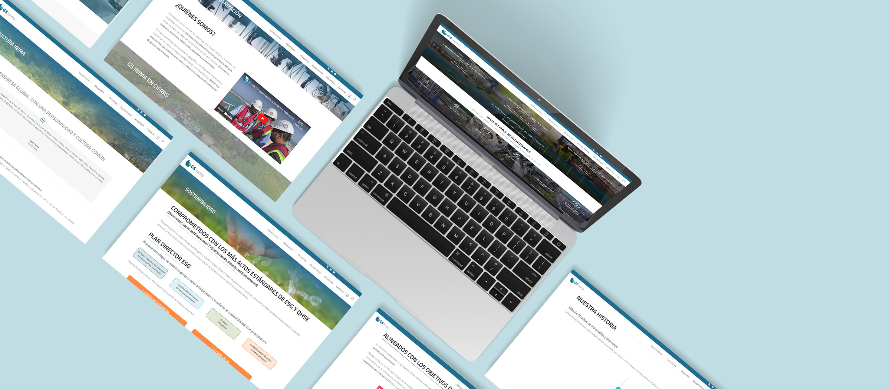
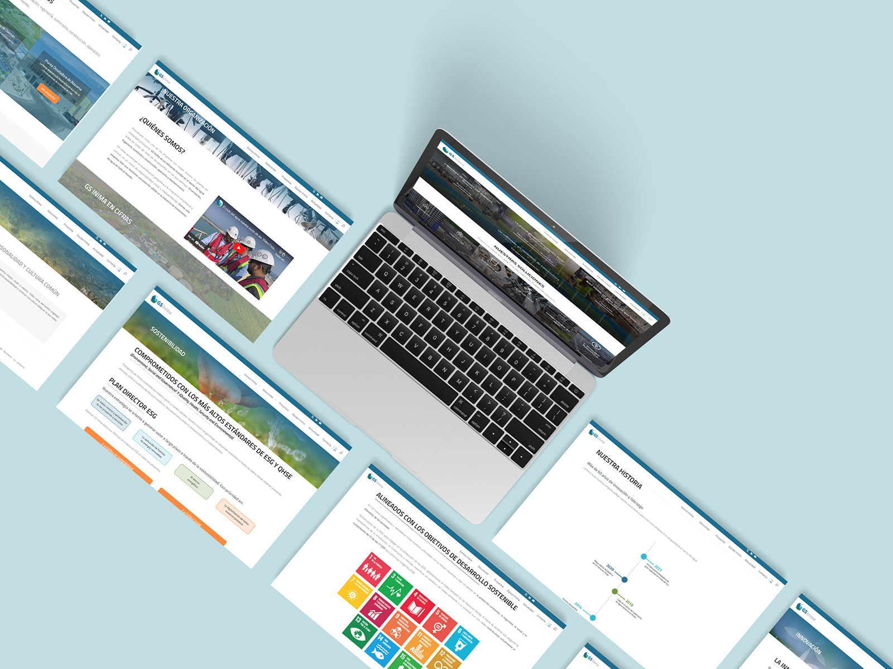
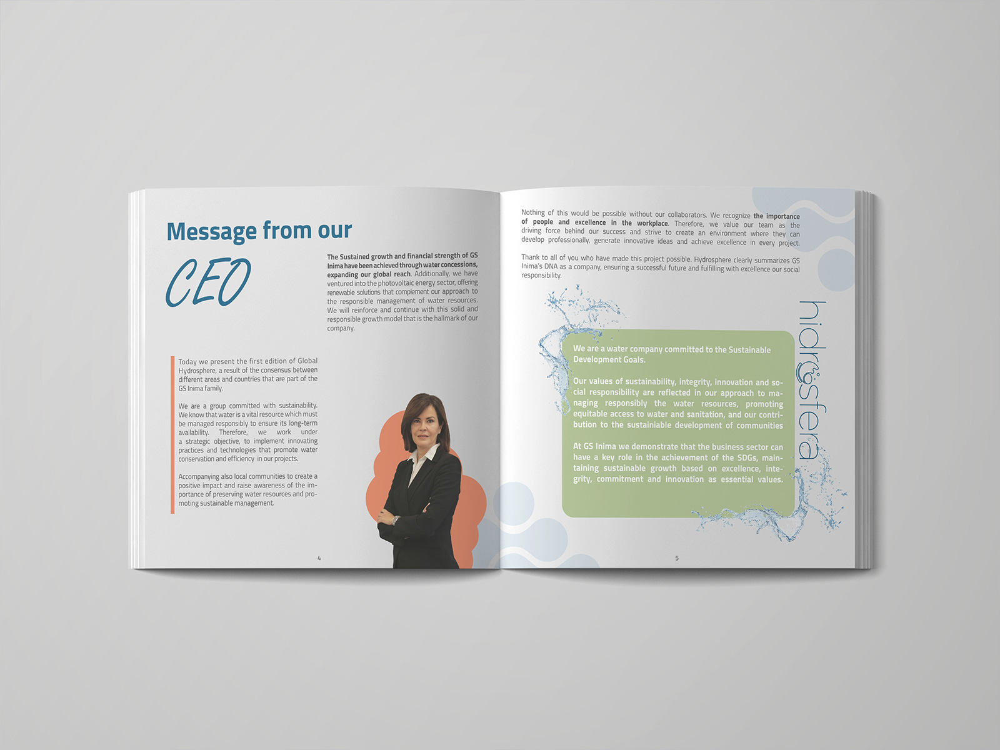
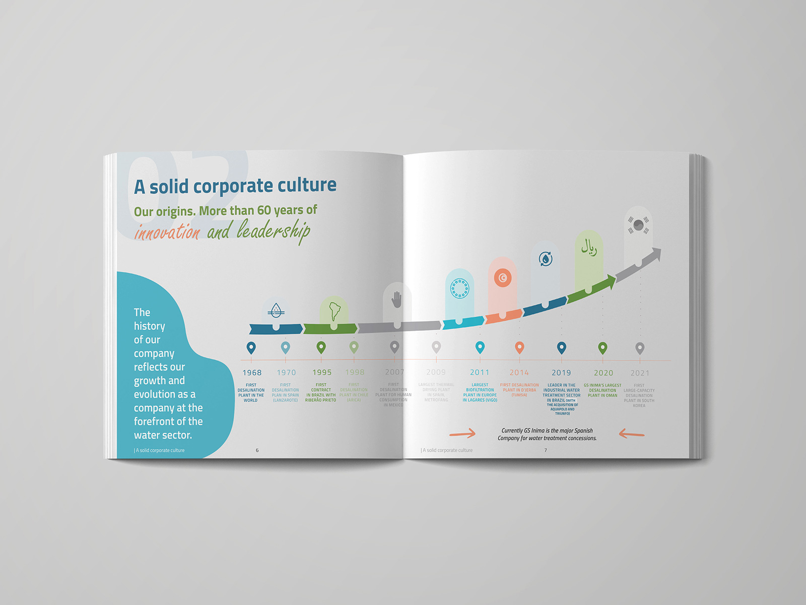
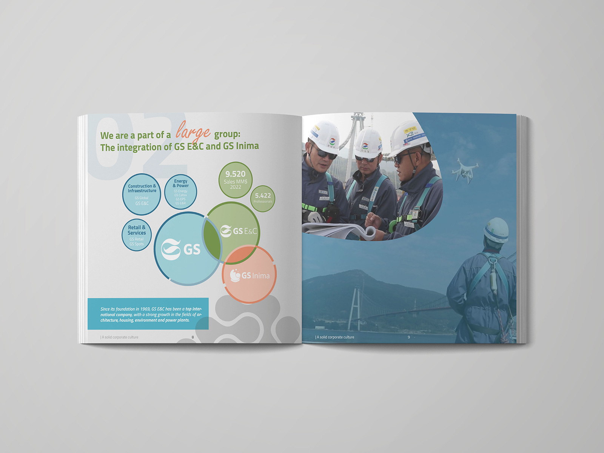
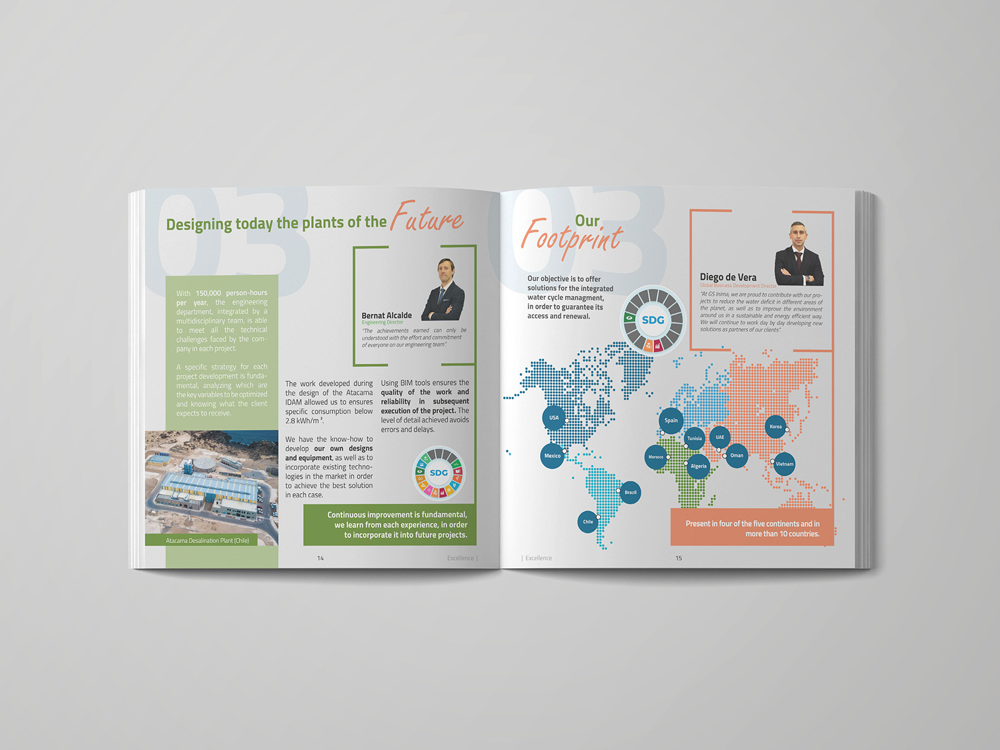
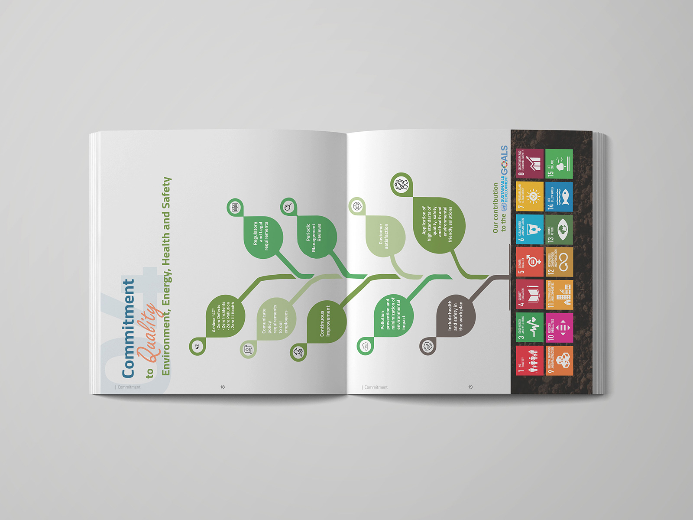

Mis proyectos / GS Inima
Para GS Inima, una multinacional especializada en la gestión del agua, desarrollé un proyecto completo de diseño editorial y digital, con el objetivo de comunicar quiénes son, qué hacen y hacia dónde van, de forma visual, clara y accesible.

El primer paso fue diseñar un dosier corporativo dirigido a públicos como clientes, inversores o colaboradores. Me centré en crear una estructura ordenada y profesional, respetando su identidad visual, pero dándole un enfoque más actual. Trabajé especialmente los gráficos y las infografías, para que incluso la información más técnica se entendiera de forma rápida e intuitiva.
Después del dosier, diseñé su página web: una plataforma funcional, moderna y coherente con su marca. Toda la estructura desde los servicios hasta los proyectos destacados está pensada para facilitar la navegación y mejorar la comprensión. También integré elementos interactivos e infográficos para explicar los datos más complejos sin perder claridad.
El resultado fue un proyecto global que mejora la comunicación visual de la empresa, refuerza su presencia digital y transmite su compromiso con la sostenibilidad y la innovación.





